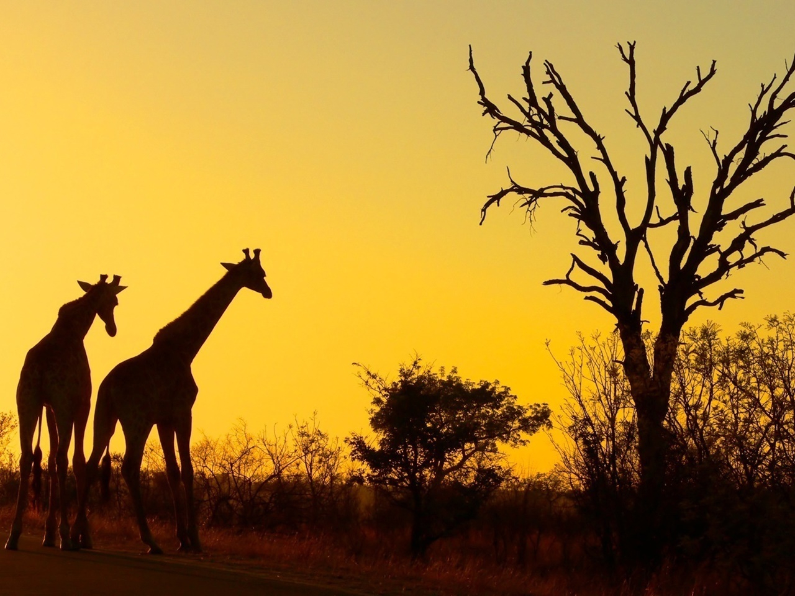

About Us
Pre-Reserve (–1898)
Over 300 recorded archaeological sites in Kruger Park attest to its occupation before modern times.
Most sites however had relatively short occupation periods, as the presence of predators and the
tsetse fly limited cattle husbandry. At Masorini hill, beside the H9 route, iron smelting was practiced
up to the Mfecane era. The reconstructed Thulamela on a hilltop south of the Levuvhu River was
occupied from the 13th to 16th centuries, and had links with traders from the African east coast.
Before the Second Anglo-Boer War the area now covered by the park was a remote section of the
eastern Transvaal's last wild frontier. Paul Kruger, President of the South African Republic
at the time, proclaimed the area, which was inhabited by the Tsonga people, a sanctuary for
the protection of its wildlife. James Stevenson Hamilton noted many kraals along the Sabi
River and also further north beyond the Letaba River[7] although the north was sparsely
populated compared to the south. Many of the local natives were employed by railway
companies for construction of rail connections, notably that between Pretoria and
Lorenço Marques during the end of the 19th century. Abel Chapman, one of the hunters
who noted that the area was over-hunted by the end of the 19th century, brought this
fact to wider attention.
Sabi Game Reserve (1898–1926)
In 1895, Jakob Louis van Wyk introduced in the Volksraad of the old South African Republic
a motion to create the game reserve. The area proposed extended from the Crocodile River
to the Sabi River in the north. That motion, introduced together with another Volksraad
member by the name of R. K. Loveday, and accepted for discussion in September 1895 by
a majority of one vote, resulted in the proclamation by Paul Kruger, president of the
Transvaal Republic (South African Republic), on 26 March 1898, of a "Government Wildlife Park.
" This park would later be known as the Sabi Game Reserve.
The park was initially created to control hunting[8] and to protect the diminished
number of animals in the park.
James Stevenson-Hamilton became the first warden of the reserve in 1902.[8] The
reserve was located in the southern one-third of the modern park.[9] Singwitsi Reserve,
named after the Shingwedzi River and now in northern Kruger National Park,
was proclaimed in 1903.[10] During the following decades all the native t
ribes were removed from the reserve and during the 1960s the last were
removed at Makuleke in the Pafuri triangle. In 1926, Sabie Game Reserve,
the adjacent Shingwedzi Game Reserve, and farms were combined to create Kruger National Park.[11]
During 1923, the first large groups of tourists started visiting the Sabie Game
Reserve, but only as part of the South African Railways' popular "Round in Nine" tours.
The tourist trains used the Selati railway line between Komatipoort on the Mozambican
border and Tzaneen in Limpopo Province. The tour included an overnight stop at Sabie
Bridge (now Skukuza) and a short walk, escorted by armed rangers, into the bush.
It soon became a highlight of the tour and it gave valuable support for the campaign
to proclaim the Sabie Game Reserve as a national park.
Kruger National Park (1926–1946)
After the proclamation of the Kruger National Park in 1926, the first three tourist
cars entered the park in 1927, jumping to 180 cars in 1928 and 850 cars in 1929.
Warden James Stevenson-Hamilton retired on 30 April 1946, after 44 years as warden
of the Kruger Park and its predecessor, the Sabi Sabi Game Reserve.
1946-1994
Stevenson-Hamilton was replaced by Colonel J. A. B. Sandenbergh of the South African Air Force.
During 1959, work commenced to completely fence the park boundaries. Work started on the southern
boundary along the Crocodile River and in 1960 the western and northern boundaries were fenced,
followed by the eastern boundary with Mozambique. The purpose of the fence was to curb the spread
of diseases, facilitate border patrolling and inhibit the movement of poachers.
The Makuleke area in the northern part of the park was forcibly taken from the Makuleke
people by the government in 1969 and about 1500 of them were relocated to land to the
south so that their original tribal areas could be integrated into the greater Kruger National Park.
1994 -present
In 1996 the Makuleke tribe submitted a land claim for 19,842 hectares (198.42 km2), namely the Pafuri or Makuleke region in the northernmost part of the park.[16] The land was given back to the Makuleke people, however, they chose not to resettle on the land but to engage with the private sector to invest in tourism. This resulted in the building of several game lodges from which they earn royalties.[17][18]
In the late 1990s, the fences between the Kruger Park and Klaserie Game Reserve, Olifants Game Reserve and Balule Game Reserve were dropped and incorporated into the Greater Kruger Park with 400,000 hectares added to the Reserve. In 2002, Kruger National Park, Gonarezhou National Park in Zimbabwe, and Limpopo National Park in Mozambique were incorporated into a peace park, the Great Limpopo Transfrontier Park.[11]
In 2009, SANParks envisaged a four-star hotel northeast of Malelane on the bank of the Crocodile River, as part of a survival strategy to make the park less dependent on state subsidies.[19] Eventually Radisson Blu was mandated to operate a 104 room safari resort starting 2019,[20][21] which promises a smaller ecological footprint than that of prior, existing camps. The three-star, 128-room Skukuza Safari Lodge, to be completed by late 2018,[22] was necessitated by the adjacent Nombolo Mdhluli conference center, opened in 2011, which draws guests arriving by charter flights or in tour busses.[22] Former head of the park Salomon Joubert warned that these developments threaten the character, ethos and original objectives of the park,[19] but minister of environmental affairs, Edna Molewa, deemed development of 0.3% of the park as acceptable.[22]